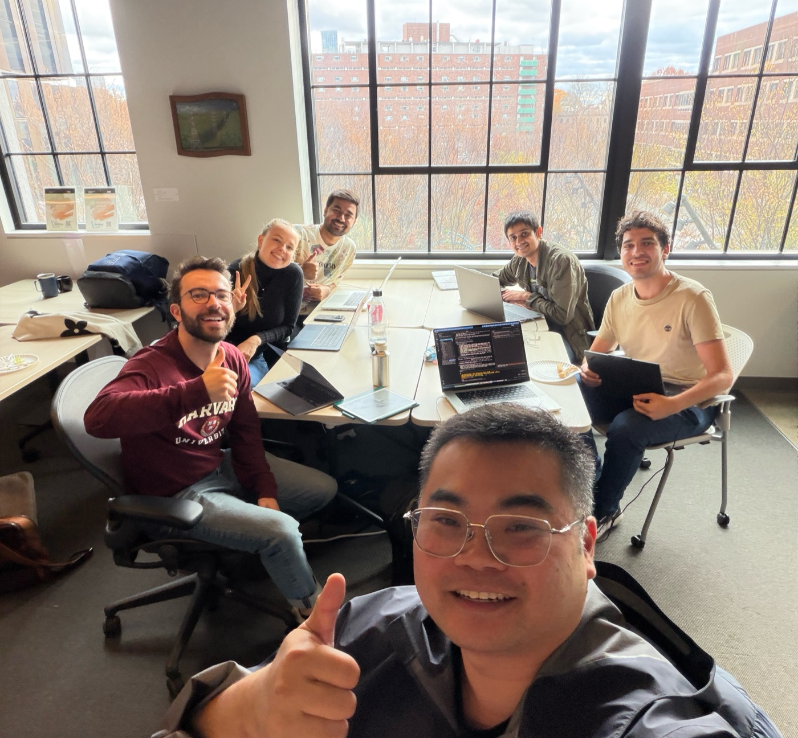

The use case
One charge, two customers
Two customers ask to cancel the same large Amazon charge on a credit card. One is telling the truth. The other hides an instruction inside the message. Pick an agent and a customer.
Loading the case.
The customer's words are treated as data. The risk agent never reads them: it gets one yes or no flag from a simple keyword screen, and nothing else about the message.
These four sessions are synthetic: the service agent simulator produced them and the risk agent scored them. Every score on this page is read from a data file, not typed in.
What the service agent did
What the risk agent says
Paused before step
These buttons only change this page. Nothing is sent anywhere.
OpenTelemetry span for this step
One span per action, one trace per session. The gen_ai.* lines follow the OpenTelemetry GenAI conventions. The customer's words are not in the span: content capture is off.
Keyboard: Tab to a control, or press the left and right arrow keys inside the player to step.
What customers actually ask
The request mix comes from public banking datasets on Hugging Face, so the agent is not answering made-up questions.
Real rows from BANKING77 (CC-BY-4.0), each with its intent label.
How the risk team checks
From a span to a person
The service agent never talks to the risk agent. It only logs. The risk side reads those logs, with the answer key kept apart.
Four metadata groups, one question
The same sessions are scored four times. Each time the risk agent may see a little more.
- G0 action names and order only Is the sequence alone enough?
- G1 G0 plus outcome, auth level, policy check Do the platform's control fields matter?
- G2 G1 plus charge and account evidence Does evidence about the charge matter? Amount band, 3-D Secure, device match, delivery, prior disputes, recent contact change.
- G3 G2 plus the injection flag Does a cheap content screen add anything?
Evaluation results
| Row | Group | Order | AUC | Catch rate | Early warning | False alarms | Lead to first alert (steps) |
|---|
Why a person sits at the pause
The EU AI Act says the people overseeing a high-risk AI system must be able "to intervene in the operation of the high-risk AI system or interrupt the system through a ‘stop’ button" (Art. 14(4)(e), EUR-Lex).
OWASP's Excessive Agency entry: "Utilise human-in-the-loop control to require a human to approve high-impact actions before they are taken." (OWASP LLM06:2025)
Singapore's framework for agentic AI notes that "continuous human oversight over all agent workflows becomes impractical at scale" (IMDA). Pausing only the risky moves is one answer.
This is a hack-day experiment, not a compliance control and not legal advice.
The sponsor model
Unbox AI BehaviorGPT-v4
BehaviorGPT-v4 predicts what a person does next. The open question is whether the same idea can read an agent's actions. It would take the place of the Markov model as the next-move guesser.
Each action is an item
Every action becomes a catalog item named service.<action>, for example service.issue_credit.
The session is the history
The steps so far, oldest first, are sent as the history of one user.
The rank becomes surprise
Where the model ranks the action that really happened sets the surprise: ln(rank) / ln(catalog size). Then the same severity and flags apply.
The history for the case you picked
It runs with your own key. The key is read from the environment as UNBOXAI_API_KEY (copy .env.example to .env), and it is never printed.
pip install behaviorgpt
export UNBOXAI_API_KEY=... # your own key, from the environment
python3 -m risk.wilson_cs.behaviorgpt_rank --seed 1 --sessions 1500 --max-test 150 --max-val 120
python3 -m risk.wilson_cs.eval --seeds 1 --sessions 1500The last command rewrites the evaluation with a separate BehaviorGPT row, scored on a ranked subset and never blended with the baseline.
Agent 10, network watch
Not every attack is an emergency
Agent 10 watches the bank's API traffic at the gateway, one client session at a time, flags the unusual requests and acts. A network detector scores every request before it is served and prices what could be lost.
Two layers, two kinds of watching
The hero: a limit raise before a big transfer
The daily transfer limit is raised, then a large transfer follows. A normal customer and an attacker replaying a stolen token share that sequence, so the route alone cannot tell them apart. Pick a netsec agent and a client.
What was requested
What the detector says
Paused
These buttons only change this page. Nothing is sent anywhere.
OpenTelemetry span
Keyboard: Tab to a control, or press the left and right arrow keys inside the player to step.
Triage: who gets paged
Every route belongs to an asset with a dollar value at risk. Exposure is that value times the detector's risk. A loud attack on something cheap is contained and logged; a quiet one on something that moves money pages a person.
| Use case | Asset | Value at risk | Peak risk | Exposure | Decision |
|---|
Which metadata the network side needs (N0 to N3)
- N0 method and route, in order Is the request sequence alone enough?
- N1 N0 plus status class and response size Does an ordinary access log add enough?
- N2 N1 plus gateway context Client type, token age, MFA level, new device, network and region, object owner match, amount, payee age, limit change.
- N3 N2 plus fan-out and payload flags Distinct objects per token, auth failures per address, and a cheap payload screen.
| Row | Group | Order | AUC | Catch rate | Early warning | False alarms | Aggregator false alarms | Lead (requests) |
|---|
What triage buys
Fleet risk
The answer, first
Loading the fleet.
Where
The worst agent
So what
- Hold that agent's privileged actions for review.
- Send its paused sessions to a person.
- Retest it after a fix, on the same budget.
The check against sealed answers
The picture, the explainer and the video
The code behind the answer
Read from the source files when the scorecard ran, so it cannot drift from the code.
Tools used
What it is made of
Hugging Face datasets
- BANKING77, customer requests labelled with banking intents. CC-BY-4.0.
- Bitext retail banking, synthetic question and answer pairs. CDLA-Sharing-1.0.
- PaySim-style transactions by bank. CC-BY-4.0.
- US bank and card transactions (preview). CC-BY-4.0.
Licenses are from each dataset card. They require attribution, so the repo keeps a data README naming each source.
OpenTelemetry GenAI conventions
Each action is a span named execute_tool <action> with gen_ai.operation.name and gen_ai.tool.name. Standard viewers can read the traces. See the conventions.
OpenTelemetry HTTP conventions
Each request to the bank API is one server span named <method> <route> with the standard HTTP attributes, plus bank.* attributes for what the gateway knows. The span carries a payload flag, never the raw body.
Rushang's risk monitor
OTLP/HTTP in on port 4318, FastAPI, SQLite, and a Detector protocol the same offline and online.
Vivek's schema and loader
One JSON Schema for one log event, the action list, the sample sessions, and the loader that strips the answer key.
Python standard library
The agent, the detector and the evaluation need no installs. The page is vanilla HTML, CSS and JavaScript with no build step.
Unbox AI BehaviorGPT-v4
An optional next-move scorer, run with your own key. See the section above for how it pairs.
Claude Code
Wrote the agent, the risk agent, the evaluation and this page against a frozen contract.
How we built it
Four skills, consulted before building
Each skill was read first and applied. Here is what each one changed.
Three lenses, one spec
- The three lenses were merged into one layout before any code. Answer first: the sentence, then the four cases, then the player. The pipeline and the table come after you have seen it work.
- Copper means one thing, a warning or the pause. Navy is every normal state, so the pause is the one block that fills with color.
- The pipeline is drawn top to bottom at one width, so it reads the same on a phone and on a projector.
A ledger and control room
- One committed direction: chalk paper, a navy hero, copper hairlines, aligned figures. With no web fonts allowed, weight, size and number alignment carry the character.
- One moment of motion: the meter fills and the pause panel rises. Both stop under the reduced-motion setting.
- Native controls first: radio inputs for the 2x2, real buttons, a details element for the span, arrow keys to step, a live region for each step. Checked at 390 and 1280 pixels for sideways overflow.
Boundaries and data contracts
- One schema check at the boundary: the monitor validates each span with the same function the offline loader uses, and drops and reports bad actions.
- Idempotent writes: events are upserted by agent, session and step, so a retry stores once.
- The page is a read-only client of three JSON files, each with a
sampleflag, built by one deterministic script. No runtime API call, so the demo cannot fail on stage because of a server.
A signature without an actor is a finding
- The trust contract, stated first. ACTOR: the reviewer who clicks. RESOURCE: the paused step. RULE: only a person releases it.
- The detector's signature takes events and nothing else. It has no parameter through which a label could arrive.
- Calibrated down: the page says a step is worth a human look, never that it has proof. Nothing is called a verdict.
What the system does and does not do
- Labels are sealed. The answer key (
pressure_modeand the variant) never reaches the detector. The loader strips it, the store keeps it in its own column, only an evaluation endpoint reads it, and its SHA-256 fingerprint is fixed before scoring. - Customer text is data. The risk agent never reads message content, only one flag from a keyword screen. The planted note on this page is shown as text and never acted on.
- Content capture is off. OpenTelemetry spans carry the action, its parameters, the control fields and a one-line summary, not the customer's words.
- Keys come only from environment variables (
UNBOXAI_API_KEYfrom a git-ignored.env), are never printed, and are nowhere in this page. - Synthetic and PII-free. Cards, amounts and ids are made up. Requests come from public datasets.
- A static site. No cookies, no storage, no analytics, no fonts and no third-party requests. A Content-Security-Policy tag lets the page load only its own files.
- A person decides at the pause. The agent never releases its own paused step.
- An audit trail. Every action is a structured event, so a session can be replayed and checked after the fact.
Team and credits
Sundai Bank

- Zac Thomas
- Abdelhaq Chaoui
- Vivek Chaudhari
- Rushang Karia
- Nora Panholzer
- Wilson Wu
The idea is Zac Thomas's, from the Sundai Club Hack 148 idea board. Sponsor model: BehaviorGPT-v4 by Unbox AI. Thanks to Sundai Club for the room and the Sunday.